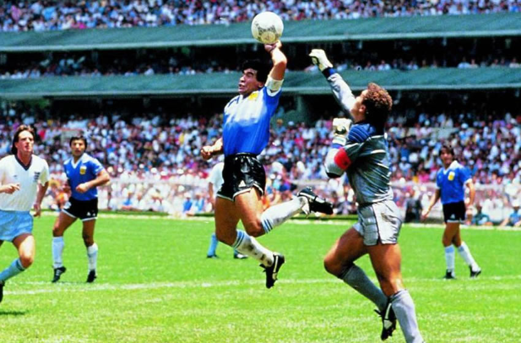

JugadasEl gol del siglo de Maradona
Revive la jugada más icónica del Mundial México 86, donde Maradona dejó atrás a medio equipo inglés en una jugada que quedó grabada en la historia del fútbol mundial.
❤️
1.2k
💬
150
👁️
3.5k